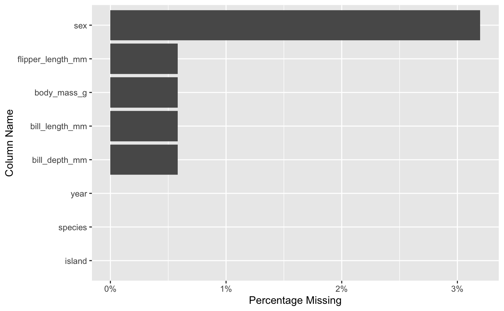
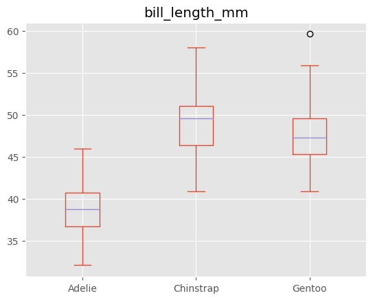
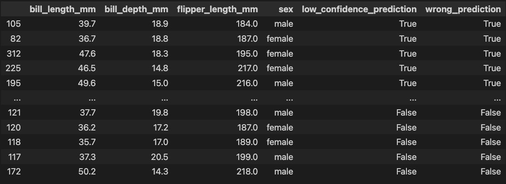
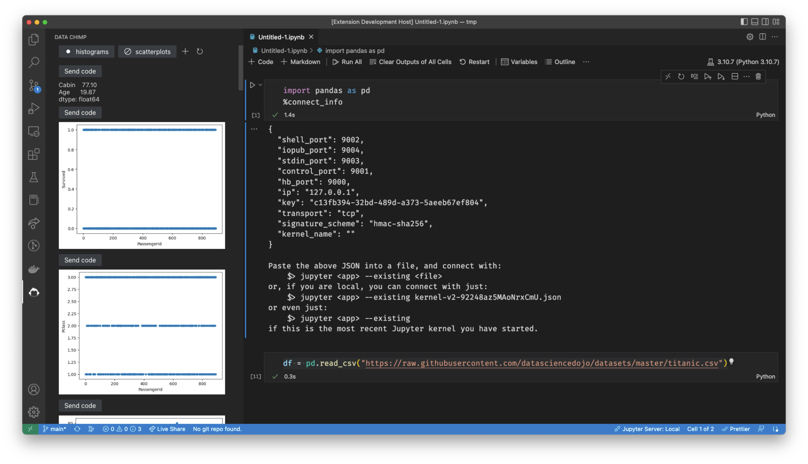

The Dark Knight has this great scene where Batman punches The Joker to intimate him into giving up information and he just starts laughing and says:
You have nothing! Nothing to threaten me with. Nothing to do with all your strength.
Batman, shocked and powerless, just stands there like an idiot.
While working in a data notebook a few months back, I felt the same way. The typical power that I had as a programmer felt worthless against the data work I was doing. No matter what I did, I still found myself:
- typing the same code repetitively
- worrying about making mistakes while writing data wrangling and model training code
If you’re building an application or library, the solution to both of these problems is simple: write a function that does the repetitive thing and write more tests. That doesn’t work for programmatic data work. Below I explain why and highlight how a solution using python’s ast module and ipython’s event callbacks and profiles does the job better than ordinary functions and tests.
Repetitive code
If you’ve been working with data and python, you could probably write code like this in your sleep:
import pandas as pd
df = pd.read_csv("https://.../palmer_penguins.csv")
df.plot.scatter(x='bill_length_mm', y='bill_depth_mm')
Hopefully at some point we realize we’re wasting time typing the same code1 and we reach for a library like pandas-profiling or sweetviz. These are great libraries that are doing the best they can with ordinary python functions, but they aren’t enough for two reasons.
First, we need to iterate on a data visualization or table to see the story within the data. An initial scatter plot is great, but what if I want to put the x-axis on a log scale or color the data points by some column? Some of these “next steps” are supported in these libraries, but they can’t anticipate or support every iteration I may need to make and when they fail to anticipate my next step, I’m back to writing repetitive code again.
Insofar as we see functions as black boxes whose implementation should be hidden/encapsulated from users, we can’t use them to solve this problem. We need the source of the code that generated the results we see so we can iterate.
Second, the reports they generate aren’t tailored to my particular data set, which means we’re often flooded with information we don’t need, making it more likely we’ll miss the stuff we do need. Yes, you can remove certain aspects of these reports to cut down on noise, but even this is limited and you can’t easily add to the results they generate.
These libraries could introduce more customization to help address this, but as functions, they couldn’t vary their output based on the code that I’m currently writing in a cell, and as we’ll see, this is important for dealing with bad data/code.
Bad data/code

This was the kind of visualization I needed thrust in my face the time that I accidentally computed a mean on a column with many missing values.
If I’m building a model to predict body_mass_g from bill_length_mm and I imputed the mean of the bill_length_mm column for all missing values, I’d want to see something like this to tip me off that there’s a better play2:

(The better play is to impute the mean bill_length_mm of the particular species for that row.)
If I’ve just trained a model that predicts penguin sex from bill_length_mm, bill_depth_mm and flipper_length_mm, I don’t want to forget to look at something like this table which can help me find label quality problems and generally debug my model:3

In all of these cases, what I need to see most depends on the code I just finished executing, something a function knows nothing about.
Some may say, “These are rookie mistakes. You should always check for missing values, better imputation methods, and low confidence predictions.” But as a former software engineer, this is unsatisfying. Good software engineers don’t manually check for every single bug every time they start writing code. They have automated tests that check correctness as they write new code. Data scientists need something similar.
A better way: metaprogramming and hooks with python + ipython
Instead of having to remember to call specific functions and sift through their possibly irrelevant output as we work, we want a workflow like this:
- We run a Jupyter cell
- We’re automatically shown relevant visualizations and tables related to the data we’re working with
- We’re able to access the source code that generated those results so we can iterate on them
To do this, we can start by registering an ipython event callback that grabs the cell source code and shows the relevant visualizations based on that source:
def show_supplementary_results(result):
cell_source = result.info.raw_cell
df_name = get_df_name(cell_source)
if df_name is not None:
# This executes visualization and table functions
# based on cell_source and make those functions' source
# available
execute_funcs(df_name, get_user_funcs())
get_ipython().events.register(
'post_run_cell',
show_supplementary_results
)
Place this in ~/.ipython/profile_default/startup/auto.py, and it’ll automatically run whenever ipython starts.
execute_funcs is the key function that’ll be called automatially whenever a cell contains a data frame. Let’s delve into how it works. If we had a data frame called penguins_df and wanted to automatically run penguins_df.describe() and penguins_df.isna().sum() , we’d call execute_funcs like this:
execute_funcs('penguins_df', ["df.describe()", "df.isna().sum()"])
After executing this in a cell, we’d see the output of penguins_df.describe() and penguins_df.isna().sum() and the following assertion would be true:
execute_funcs('penguins_df', ["df.describe()", "df.isna().sum()"])
assert (
[_os0, _os1]
==
["penguins_df.describe()", "penguins_df.isna().sum()"]
)
Notice that the source code stored in _os*4 has substituted “df” within “df.describe()” for “penguins_df,” the data frame name passed into execute_funcs. This lets us quickly execute the source in _os* without worrying about changing variable names, and it’s powered by the following ast.NodeTransformer subclass:
class VarSwapper(ast.NodeTransformer):
def __init__(self, new_name) -> None:
super().__init__()
self.new_name = new_name
def visit_Name(self, node: ast.Name):
if node.id == "df":
node.id = self.new_name
return node
def __call__(self, *args, **kwds):
return self.visit(args[0])
This subclass is invoked via execute_funcs:
def execute_funcs(df_name: str, funcs: list[str]):
df = eval(df_name)
for func in funcs:
# Evaluate the functions, ensuring that the
# df name points to the data frame named
# by the df_name function argument
display(eval(func, {'df': df}))
# Transform the source code
nodes = map(ast.parse, funcs)
transformed_nodes = map(VarSwapper(df_name), nodes)
sources = map(ast.unparse, transformed_nodes)
# Assign output variables so we can access source
for idx, source in enumerate(sources):
globals()[f"_os{idx}"] = source
If you put all this code in the aforementioned ipython profile file, you can execute and retrieve the source of arbitrary code automatically as you work in your notebook.
conclusion
Python’s ast module and ipythons extension points take us beyond what ordinary functions can offer, and I think they unlock workflows that lead to better analysis and better performing ML models. With these tools, we can tackle our data work more effectively and stop feeling like Batman standing there like an idiot.
If you’d like to experience a workflow like above one I’ve described, I’ve built a vscode plugin (currently in open beta) that automatically shows contextual data visualizations, tables, messages, and docs as you work in your notebook. Customize it to help you spot unexpected features in your data, get oriented in a new data set quickly, or enforce best practices on your team:

-
Quickly banging out code like this to see a visualization is addictive. It’s easy, and there’s the possiblity of a big reward once you hit enter. Maybe you find a bombshell insight. Maybe you come up with an idea for a new feature to feed into your ML model. This variable ratio reward schedule turns the data nobook into a slot machine, and it can keep us content with writing repetitive code indefinitely. ↩︎
-
Thanks to Marysia Winkels for the example. She dicusses it more in this PyData Global talk. ↩︎
-
I generated this table using Vincent Warmerdam’s doubtlab package. ↩︎
-
The “os” in
_osand_os1stands for “output source,” and these variables are meant to feel like the standard___variables that store the most recent outputs as a part of ipython’s caching system. ↩︎